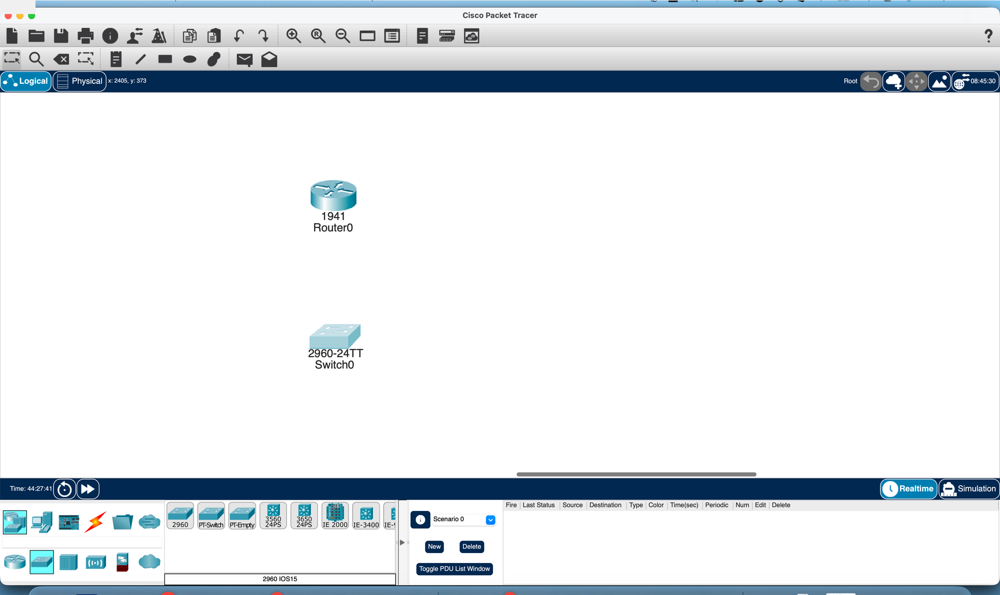
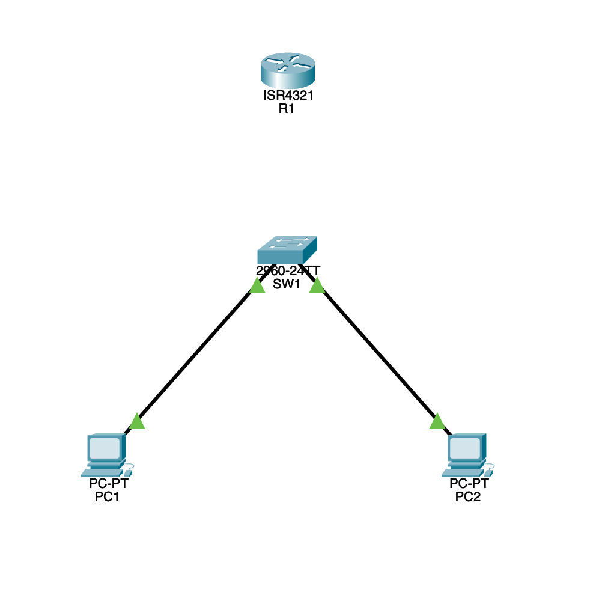

Cisco Packet Tracer is a free network simulation tool built by Cisco. It lets you build virtual networks with routers, switches, PCs, and servers — then configure and test them exactly like real hardware. Every CCNA lab in this study system uses Packet Tracer. You can practice IOS commands, build topologies, and break things without touching a single physical device.
enable, configure terminal, hostname, show ip interface brief.pkt fileGo to netacad.com and click Sign Up. You can use your personal email. The account is free — you do not need to enroll in a full course to download Packet Tracer.
After logging in, go to Resources → Download Packet Tracer. Choose your operating system (Windows, macOS, or Linux). The installer is about 200 MB. Install it with default settings — no special configuration needed.
On macOS, you may need to allow the app in System Settings → Privacy & Security after installation. On Windows, just run the .exe and click through the wizard.
Open Packet Tracer. It will ask you to log in with your NetAcad account the first time. After that, it remembers your credentials. You will land on a blank workspace — that is where you build networks.
Packet Tracer has five main areas you will use constantly. Take a minute to locate each one before building anything.

Annotated layoutWhen connecting devices, Packet Tracer asks you to pick a cable type. Here are the three you will use most:
If you are unsure which cable to use, click the lightning bolt icon (auto-connect) in the Connections category. Packet Tracer will pick the right cable and interfaces for you.

In the Device Tray at the bottom, click Network Devices (the first icon, looks like a router). In the sub-row that appears, pick Routers, then click the 1941 model. Click anywhere on the workspace to place it.
Still in Network Devices, click Switches in the sub-row. Pick a 2960 switch and click the workspace to place it next to the router.
In the Device Tray, click Connections (the lightning bolt category). Select Copper Straight-Through cable. Click the router, pick GigabitEthernet0/0. Then click the switch, pick FastEthernet0/1. A cable will appear. The link lights will turn orange (initializing), then green (up).
Green = link is up. Orange = still initializing (STP on the switch takes ~30 seconds). Red = link is down (wrong cable, interface shut down, or mismatch).
Click PC1 to open its properties window. Go to the Desktop tab, then click IP Configuration.
Set the following values:
IP Address: 192.168.1.10 Subnet Mask: 255.255.255.0 Default Gateway: 192.168.1.1
PCs in Packet Tracer are configured through the GUI, not the CLI. The default gateway must match the router's interface IP (192.168.1.1) for traffic to leave the subnet. Without it, the PC can talk to devices on the same network but cannot reach anything beyond the router.
Click the router to open its properties window. Go to the CLI tab. You will see a prompt like Router>. This is User EXEC mode — the most basic access level.
Type the commands below. This is the most fundamental IOS workflow: User EXEC → Privileged EXEC → Global Configuration mode.
Router> enable Router# configure terminal Router(config)# hostname R1 R1(config)#
Notice how the prompt changed from Router to R1. The hostname command renames the device — you will do this in every lab.
? — Type at any prompt to see all available commands. Type sh? to see commands starting with "sh".
Tab — Press after typing part of a command to auto-complete. E.g., type show ip int + Tab to get show ip interface.
do — Run show commands from config mode: do show ip interface brief works from (config)# without leaving config mode.
These save time on the exam and in real life. Practice using ? and Tab from the start.
Router interfaces are administratively down by default (unlike switches). You need to manually bring them up with no shutdown.
R1(config)# interface GigabitEthernet0/0 R1(config-if)# ip address 192.168.1.1 255.255.255.0 R1(config-if)# no shutdown R1(config-if)# end ! You should see: %LINK-5-CHANGED: Interface GigabitEthernet0/0, changed state to up
Now verify the interface is up:
R1# show ip interface brief ! Look for GigabitEthernet0/0 — Status: up, Protocol: up
show ip interface brief is the single most useful command in IOS. It shows every interface, its IP address, and whether it is up or down. You will use it in every lab.
Two saves to remember:
Save the device config — Inside the CLI, run copy running-config startup-config (or the shortcut wr). This saves the router's configuration so it survives a reboot.
R1# copy running-config startup-config ! Or the shorthand: R1# wr
Save the Packet Tracer file — Press Ctrl+S (or Cmd+S on Mac), or go to File → Save. Pick a location and name — your file will end with .pkt. This is the entire topology and all device configs in one file.
Save your .pkt file after every major step. Packet Tracer can occasionally crash, and there is no auto-save. Name your files descriptively: lab-pt0-getting-started.pkt, lab-pt1-vlan.pkt, etc.
Click the Simulation tab at the bottom-right of the Packet Tracer window (next to Realtime). The workspace will switch to Simulation mode — packets no longer flow in real time.
Open PC1's Desktop tab, click Command Prompt, and type:
C:\> ping 192.168.1.1
Back in the workspace, click Capture / Forward to step through each packet one at a time. Watch the ICMP packet travel from PC1 → SW1 → R1 and back. You can click any envelope icon on the wire to inspect the packet headers at that hop.
Simulation mode lets you inspect every packet header at every hop. Use it when troubleshooting — you can see exactly where a packet gets dropped or rejected. It turns invisible network behavior into something you can watch frame by frame.
You now have Packet Tracer installed, know your way around the interface, and have configured your first router. Every lab from here builds on these exact steps — place devices, cable them, open the CLI, configure, verify.
Next: Lab PT-1 — Multi-VLAN Campus Topology →